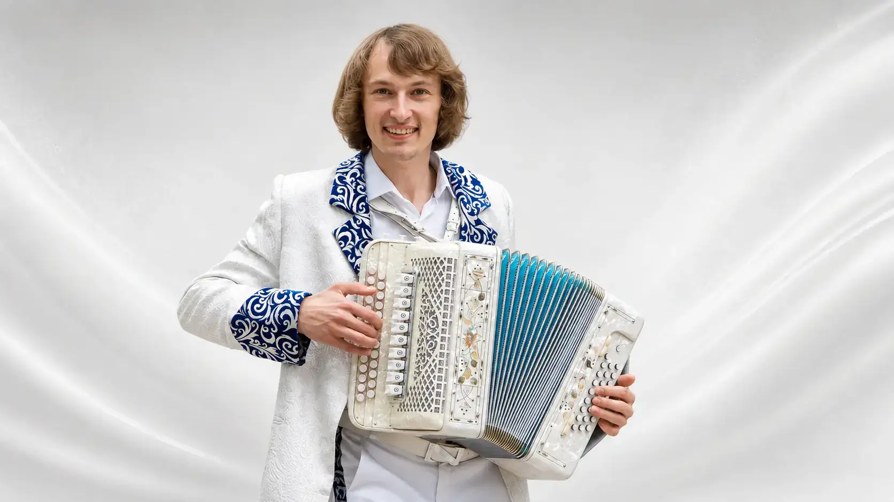

Статус
ПАВЕЛ УХАНОВ · PROFILE
О СЕБЕ
HARMONIST · ARTIST · TEACHER
Профиль / 01
Музыкант, который работает с традицией как с живым материалом.
Павел Владимирович Уханов — Заслуженный гармонист России, лауреат международных конкурсов, старший преподаватель Российской академии музыки имени Гнесиных.
Под его руководством ГармоньDrive сформировал собственный узнаваемый сценический стиль, соединяющий народную музыкальную традицию и современную концертную эстетику.

Педагогика
Российская академия музыки имени Гнесиных
Авторский вектор